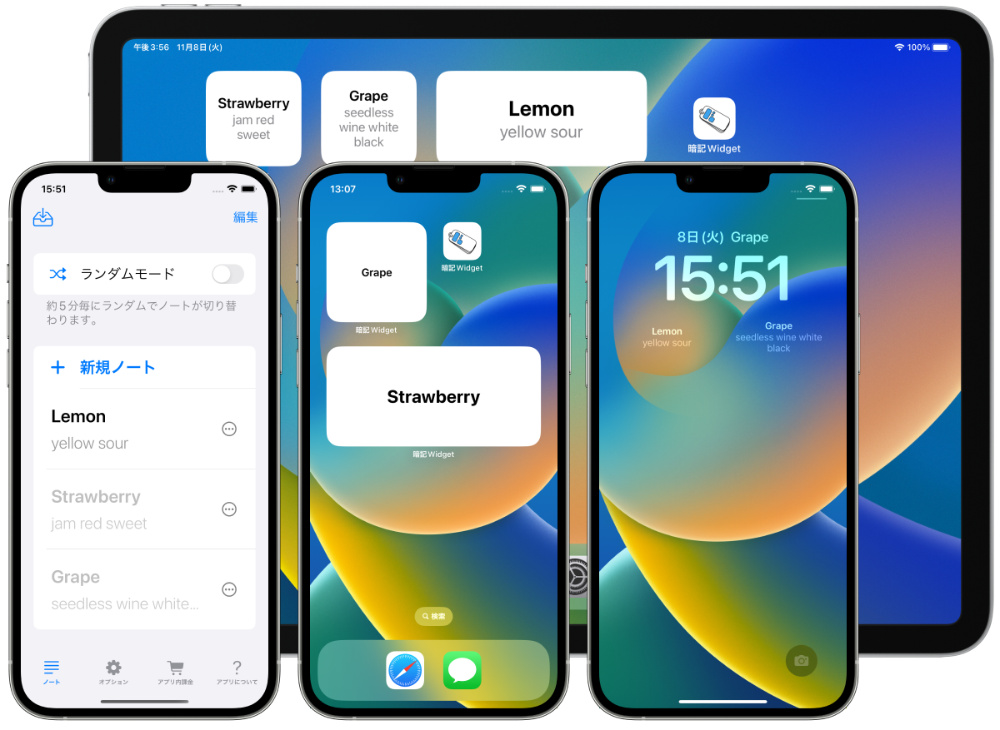
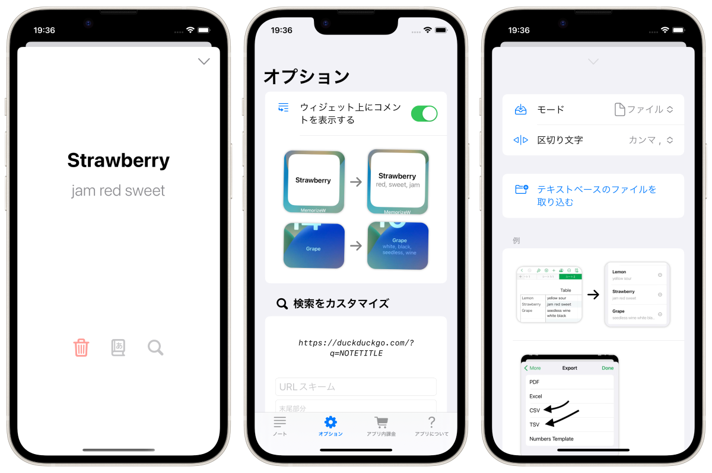

MemorizeWidget
Ubah layar beranda atau layar kunci iPhone/iPad Anda menjadi buku memorandum!



Ikhtisar.
Menampilkan buku memorandum Anda pada layar beranda atau layar kunci menggunakan fungsi widget. Aplikasi untuk iPhone dan iPad.
- Dua mode: 'mode berdiri sendiri' dan 'mode acak'.
- Dalam 'random mode', nada yang ditampilkan berubah setiap lima menit
- Dukungan widget layar kunci (hanya iOS 16).
- Data memorandum dapat diimpor dari teks dan file (csv, tsv, txt, dll.)
- Keterkaitan ke kamus bawaan OS
- Fungsi pencarian yang dapat disesuaikan

Opsi.
- Menampilkan 'komentar' serta 'judul' catatan pada widget (widget layar beranda/ widget persegi panjang layar kunci saja).
Direkomendasikan untuk model iPhone 14 Pro terbaru!
Dengan iPhone 14 Pro dengan Always On Display, Anda dapat memeriksa buku catatan Anda tanpa menyentuh iPhone Anda!

Kutipan: https://www.apple.com/jp/iphone-14-pro/
Spesifikasi
Harga
Gratis
Pembelian dalam aplikasi
Sembunyikan iklan (160 yen)
Platform
- iOS 15.6 atau yang lebih baru
- iPadOS 15.6 atau yang lebih baru
Bahasa yang didukung
- Bahasa Jepang
- Bahasa Inggris